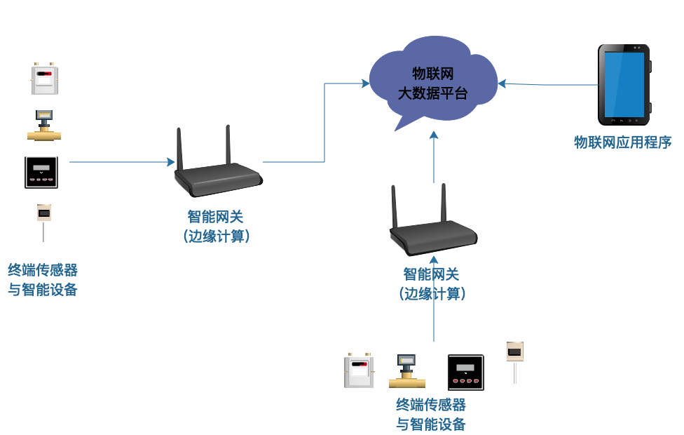
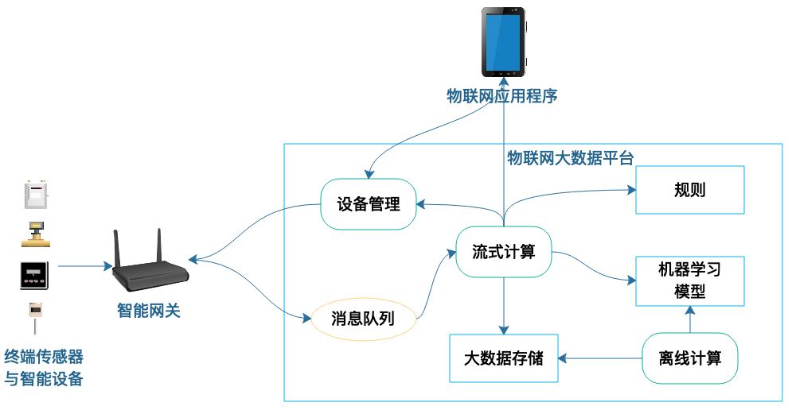

- 00 开篇词 为什么说每个软件工程师都应该懂大数据技术？.md
- 01 大数据技术发展史：大数据的前世今生.md
- 02 大数据应用发展史：从搜索引擎到人工智能.md
- 03 大数据应用领域：数据驱动一切.md
- 04 移动计算比移动数据更划算.md
- 05 从RAID看垂直伸缩到水平伸缩的演化.md
- 06 新技术层出不穷，HDFS依然是存储的王者.md
- 07 为什么说MapReduce既是编程模型又是计算框架？.md
- 08 MapReduce如何让数据完成一次旅行？.md
- 09 为什么我们管Yarn叫作资源调度框架？.md
- 10 模块答疑：我们能从Hadoop学到什么？.md
- 11 Hive是如何让MapReduce实现SQL操作的？.md
- 12 我们并没有觉得MapReduce速度慢，直到Spark出现.md
- 13 同样的本质，为何Spark可以更高效？.md
- 14 BigTable的开源实现：HBase.md
- 15 流式计算的代表：Storm、Flink、Spark Streaming.md
- 16 ZooKeeper是如何保证数据一致性的？.md
- 17 模块答疑：这么多技术，到底都能用在什么场景里？.md
- 18 如何自己开发一个大数据SQL引擎？.md
- 19 Spark的性能优化案例分析（上）.md
- 20 Spark的性能优化案例分析（下）.md
- 21 从阿里内部产品看海量数据处理系统的设计（上）：Doris的立项.md
- 22 从阿里内部产品看海量数据处理系统的设计（下）：架构与创新.md
- 23 大数据基准测试可以带来什么好处？.md
- 24 从大数据性能测试工具Dew看如何快速开发大数据系统.md
- 25 模块答疑：我能从大厂的大数据开发实践中学到什么？.md
- 26 互联网产品 + 大数据产品 = 大数据平台.md
- 27 大数据从哪里来？.md
- 28 知名大厂如何搭建大数据平台？.md
- 29 盘点可供中小企业参考的商业大数据平台.md
- 30 当大数据遇上物联网.md
- 31 模块答疑：为什么大数据平台至关重要？.md
- 32 互联网运营数据指标与可视化监控.md
- 33 一个电商网站订单下降的数据分析案例.md
- 34 A_B测试与灰度发布必知必会.md
- 35 如何利用大数据成为“增长黑客”？.md
- 36 模块答疑：为什么说数据驱动运营？.md
- 37 如何对数据进行分类和预测？.md
- 38 如何发掘数据之间的关系？.md
- 39 如何预测用户的喜好？.md
- 40 机器学习的数学原理是什么？.md
- 41 从感知机到神经网络算法.md
- 42 模块答疑：软件工程师如何进入人工智能领域？.md
- 所有的不确定都是机会——智慧写给你的新年寄语.md
- 第2季回归丨大数据之后，让我们回归后端.md
- 结束语 未来的你，有无限可能.md
30 当大数据遇上物联网
某位互联网大佬说过，未来20年最有发展潜力的三项技术分别是：区块链、人工智能、物联网。关于区块链，现在可能是最有争议也是最迷茫的时候；关于人工智能的价值，我们已经达成共识并稳步发展；而真正完成早期探索、处于突破临界点的可能就是物联网了。
物联网确实也能给我们足够的想象空间：万物互联，所有的一切设备都是智能的，它们通过互相通信，彼此联系；而人们也可以通过云端的应用掌控一切，就像科幻电影描述的那样。
最关键的是，相比人工智能和区块链还在进行技术探索，物联网的技术已经成熟，只待“临门一脚”了。
物联网应用场景分析
现在说“万物互联”也许为时尚早，但是很多细分的垂直领域场景已经实现了物联网。
1. 智能家居
智能家居可能是和我们最接近，也是目前最普及的物联网。目前市面上销售的各种大家电，很多都有上网和远程控制功能。小米旗下的几乎所有家电都可以通过网络控制，这些设备和智能音箱联通，我们可以通过语音控制台灯、电饭煲、自动窗帘等。
下班回家，说一句“我回来了”，家里的灯立即打开，空调开启、窗帘关闭。要睡觉了，说声“晚安”，大灯关闭、夜灯开启、空气净化器进入夜间模式。是不是很酷？最重要的，这些技术和产品都已经成熟，而且价格低廉。
2. 车联网
车联网曾经被人们寄予厚望，Intel就在车联网方面投入很多。我在Intel工作期间，有段时间每天去公司上班，一楼大厅都播放车联网的美好场景：
道路上的车辆互相通信连接，前面车辆刹车，立即通知后面车辆，后面车辆也减速；路上发生车祸，警告其他车辆小心驾驶，车辆通过自己的摄像头将车祸现场照片视频自动上传给交警和保险公司；进入停车场，车辆和泊位系统通信，自动引导到空车位。车辆和车辆之间、车辆和其他交通设施之间彼此通信，互相协作，构成一个网络。
除此之外，物联网还应用在农业领域，土壤传感器探测土壤湿度，数据上传云端，云端系统根据农作物特性远程控制农田现场的喷淋装置。在能源利用领域，摄像头和红外传感器捕捉人们的活动，自动控制照明和空调系统，保证舒适和节能的平衡。
物联网平台架构
物联网主要是将各种传感器和智能设备连接起来，将数据上传云端，根据规则和机器学习模型进行远程控制，并通过物联网应用程序进行监控管理。一个典型的物联网平台架构如下图所示。

终端传感器实时采集数据，利用移动数据网络将数据上传给智能网关，智能网关进行初步的数据处理，根据规则和机器学习模型进行计算，再将计算结果通过移动数据网络下发给可控制的终端智能设备。
由于传感器可能部署在很多相距较远的地方，而且数量庞大，所以不可能将传感器数据直接接入云端服务器，而且也不是所有的传感器数据都需要实时上传云端。所以，需要有一个在传感器现场的前置服务器进行现场管理。智能网关就是距离现场传感器最近的一个计算机。
由于智能网关布置在物联网的作业现场，和传感器距离很近，处于整个云计算的边缘，所以在智能网关上的计算也叫边缘计算。
我们看到，在科技领域隔一段时间就会造出一个新名词，这可不是技术人员在没事找事瞎歪歪。每一个能公开传播的科技名词背后都有巨大的经济利益之争。科技巨头们为了在争夺市场份额，不断抛出新的科技名词，企图主导科技的话语权，进而获得经济利益。而大众也会审美疲劳，需要市场上不断有新鲜的东西问世。
但是我们作为科技从业人员，需要搞清楚这些新鲜热闹的科技新词背后的技术本质，不要被这些纷纷扰扰的技术新名词搞得迷失了方向。
智能网关进行现场数据处理后，也就是进行边缘计算后，还要把数据上传到云端，即物联网大数据平台，将数据永久存储，进行机器学习。还要将各个异地的传感器数据统一汇总，进行全局性的计算并进行全局性的控制。
此外云端还负责将各种数据推送给应用程序设备，工作人员可以实时监控整个物联网的运行情况，并通过应用程序进行远程控制。
大数据技术在物联网中的应用
如果说互联网连接的是人，那么物联网连接的就是物，是各种智能设备和传感器。相对人的数量来说，智能设备的数量要多得多，人不会时刻都在上网，而智能设备则时刻都在联网传输数据，所以物联网更需要大数据技术。
物联网里大数据技术的应用，一方面是大数据的存储和计算，另一方面就是边缘计算管理。我们先看下物联网大数据平台的架构。

1.智能网关通过消息队列将数据上传到物联网大数据平台，Storm等流式计算引擎从消息队列获取数据，对数据的处理分三个方面。
数据进行清理转换后写入到大数据存储系统。
调用规则和机器学习模型，对上传数据进行计算，如果触发了某种执行规则，就将控制信息通过设备管理服务器下发给智能网关，并进一步控制终端智能设备。
将实时统计信息和应用程序监听的数据发送给应用程序设备，供使用者查看管理。
2.Spark等离线计算引擎定时对写入存储系统的数据进行批量计算处理，进行全量统计分析和机器学习，并更新机器学习模型。
3.应用程序也可以通过设备管理服务器直接发送控制指令给智能网关，控制终端智能设备。
这样就构成一个典型的物联网“端-云-端”架构，其中两个端分别是传感器与智能设备端，以及应用程序设备端，而云则是大数据云计算平台。
此外，边缘计算也要执行大量的逻辑运算，主要是对传感器数据进行处理和计算。运算逻辑代码和处理规则可能会经常变化，特别是规则配置，随时可能更新。
比较好的做法就是参考大数据计算框架的做法，即移动计算，将执行代码和规则配置分发到智能网关服务器。
开发者将代码和配置通过设备管理服务器分发给各个智能网关，智能网关热加载这些代码开始执行。这样人们不但可以远程控制智能设备，还可以控制智能设备的运行逻辑。
现在一些商业化的物联网云计算平台提出函数即服务FaaS，在应用程序或者云控制台上编写函数，分发到智能网关执行就可以，这也是目前比较火的Serverless的一种实现。
小结
物联网的很多应用场景都会加上“智能”二字，比如智能家居、智能交通等。万物互联本身不是目的，让万物更智能，让生活更美好才是目的，而这些智能正是靠大数据技术实现的。不管是大规模传感器数据的采集、传输、处理，还是关于这些数据的分析与机器学习，以及最后对现场智能设备控制的边缘计算，背后都用到了大数据技术。
物联网的概念从提出到现在也过去很多年了，最近两年又重新开始火起来，我想应该跟大数据技术的普及有很大关系。
思考题
你了解的物联网应用场景还有哪些？大数据在其中的作用是什么？
欢迎你点击“请朋友读”，把今天的文章分享给好友。也欢迎你写下自己的思考或疑问，与我和其他同学一起讨论。
© 2019 - 2023 Liangliang Lee. Powered by gin and hexo-theme-book.